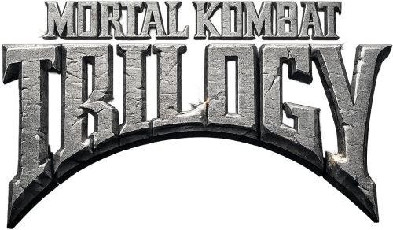
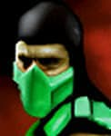
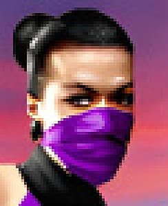
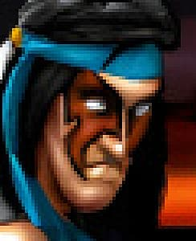
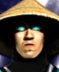
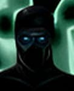
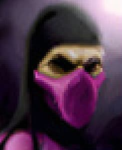
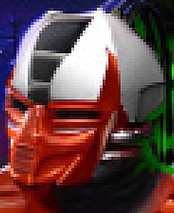
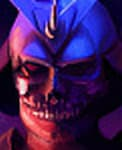
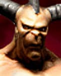
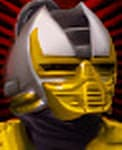
| Universal: P = Punches HK = High Kick LK = Low Kick BL = Block Run = F, F |
Game.com: P = A HK = B LK = D BL = C |
Fat: F, F, F, D, P Bab: B, F, F, P Fri: B, F, F, (P+BL) Brut: F, F, DF, P |
Question Mark Menu Code- Go to options. At the options screen press Up,C,D,B. Go to the question mark and ta-da. Your cheats await. They are Quick Finish, Instant Agressor, and Low Damage. If you turn on Quick Finish, when it says Finish Him!, press A for Brutality, B for Fatality, C for Friendship, and D for Babality. Play as Ermac- At the character select, press B,C,B,B,D. Highlight the dark dragon symbol and press A. Play as Noob Saibot- At the character select screen, press D,D,C,D,B. Highlight the light dragon symbol and press A.
a. Hidden Characters - Ermac: At the character select screen, press B, C, B, B, D. - Noob Saibot: At the character select screen, press D, D, C, D, B. - Scorpion: At the character select screen, Hold up, left, and the right for 5 seconds (Unconfirmed)** b. Cheat Menu - At the Options Screen, press Up, C, D, B. The screen will shake. Choose the Question mark. You will now have access to 1 Button Finishers, Instant Aggressors, and Low Damage. c. Invincibility (unconfirmed)** - At the title screen press D, B, C, A, D, C, A, B, A, A, B. d. Second "?" Menu (unconfirmed)** - Press A + C, B, D, A, A, A, C, C at the story screen. **Note: All of the above have been tried numerous times. The two 'extra' codes at the bottom seem bogus since the A Button is the 'Accept' key. It would advance you through the menus before the whole code could be typed in. As for Scorpion, it's your call. Every web-site has the same vague description (which is posted above). You can't choose a character while the D-pad is pressed, so again, I think it's bull.
Bio:
Cyrax is unit LK-4D4. The second of three prototype cybernetic ninjas built by the Lin Kuei. Like his counterparts, Cyrax's last programmed command is to find and terminate the rogue ninja, Sub-Zero. Without a soul, Cyrax goes undetected by Shao Kahn and
remains a possible threat against his occupation of Earth.
Special Moves:
Bomb Toss: F, F, (LK+HK)
Teleport: B, B, (LK+HK)
Finishers: 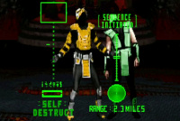 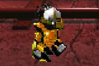 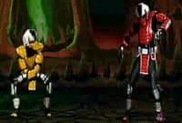
Fatality - Self-Destruct: F, F, F, D, P
Babality: B, F, F, P
Friendship - The Charleston: B, F, F, (P+BL)
Brutality: F, F, DF, P
Bio:
An enigma to all who come into contact with him, Ermac's past remains shrouded in mystery. It's believed that he exists as a life force brought together by the souls of extinguished Outworld warriors. Shao Kahn has managed to take possession of these souls,
and use them to fight on the side of tyranny.
Special Moves:
Fireball: D, B, BL
Telekinetic Slam: B, D, B, HK
Finishers: 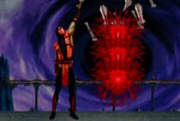 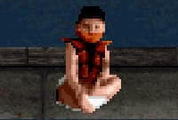 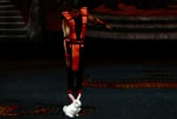
Fatality - Telekinetic Massacre: F, F, F, D, P
Babality: B, F, F, P
Friendship - Magic Trick: B, F, F, (P+BL)
Brutality: F, F, DF, P
Bio:
When the renegade Princess Kitana makes her escape into the unknown regions of Earth, Jade is appointed by Shao Kahn to bring her back alive. Once a close friend of the princess, Jade is faced with the choice of betraying her friend or disobeying her emperor.
Special Moves:
Razor-Rang: B, B, F, P
Shadow Kick: D, F, LK
Staff Toss: B, F, P
Finishers: 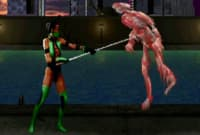 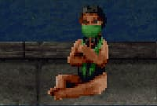 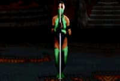
Fatality - Staff Shaker: F, F, F, D, P
Babality: B, F, F, P
Friendship - Pogo Stick: B, F, F, (P+BL)
Brutality: F, F, DF, P
Bio:
Kitana is accused of treason by the high courts of the Outworld after murdering her evil twin, Mileena. Shao Kahn appoints a group of warriors specifically to catch his daughter and bring her back alive. But Kitana must find a way to reach the newly crowned
Queen Sindel first and warn her of their true past.
Special Moves:
Fan Throw: F, F, (P+LK) (Also in Air)
Square Wave Punch: D, B, (P+LK)
Finishers: 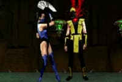 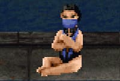 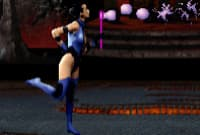
Fatality - Fan Decap: F, F, F, D, P
Babality: B, F, F, P
Friendship - Bubbles: B, F, F, (P+BL)
Brutality: F, F, DF, P
Bio:
Murdered by her twin sister Kitana, Mileena finds herself brought back to life by Shao Kahn himself. Her skills as a vicious fighter will be needed to defeat Earth's Chosen Warriors. Her ability to read the thoughts of her twin sister will enable Kahn
to stay one step ahead of them.
Special Moves:
Sai Throw: (Hold (P+LK) 2 sec.), (Release (P+LK)) (Also in Air)
Teleport Kick: F, F, LK
Finishers: 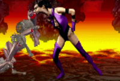 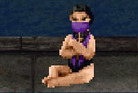 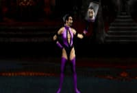
Fatality - Man-Eater: F, F, F, D, P
Babality: B, F, F, P
Friendship - Mirror: B, F, F, (P+BL)
Brutality: F, F, DF, P
Bio:
Nightwolf works as a historian and preserver of his people's culture. When Kahn's Portal opens over North America, Nightwolf uses the magics of his shaman to protect his tribe's sacred land. This area becomes a vital threat to Kahn's occupation of the
Earth.
Special Moves:
Spirit Arrow: D, F, (P+BL)
Tomahawk Swipe: D, B, BL
Finishers: 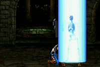 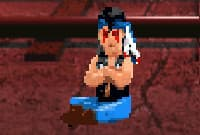 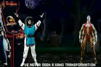
Fatality - Spirit Light: F, F, F, D, P
Babality: B, F, F, P
Friendship - Raiden Transformation: B, F, F, (P+BL)
Brutality: F, F, DF, P
Bio:
Noob Saibot emerges from the darkest region of reality - a region known as the Netherrealm. He belongs to a group called the Brothers of the Shadow, and worships an evil and mysterious fallen elder god. His mission is to spy on the events taking place
in the battle between the realms and report back to his enigmatic leaders.
Special Moves:
Disabler Fireball: D, F, BL (Temporarily Disables Block)
Teleport Slam: F, D, F, P
Warp Punch: F, F, P
Finishers: 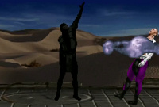 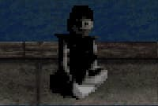 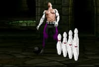
Fatality - N/A: F, F, F, D, P
Babality: B, F, F, P
Friendship - Bowling: B, F, F, (P+BL)
Brutality: F, F, DF, P
Bio:
As Earth's sworn protector, Raiden finds himself banished in the merger between Earth and Outworld. The thunder god transforms himself into a mortal warrior in order to exist once again on Earth and fight on the side of his human comrades - this time risking
his place in the pantheon of gods, and giving up his own immortality.
Special Moves:
Lightning Bolt: D, F, (P+LK)
Torpedo: B, B, F (Also in Air)
Finishers: 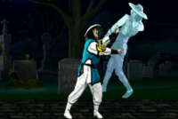 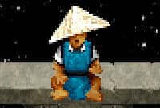 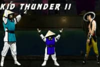
Fatality - Electrocution: F, F, F, D, P
Babality: B, F, F, P
Friendship - Kid Thunder: B, F, F, (P+BL)
Brutality: F, F, DF, P
Bio:
Born in Kitana's former world of Edenia, Rain was smuggled away from the realm as a small child shortly after Shao Kahn's takeover. Thousands of years later he resurfaced, his allegiance belonging to Kahn. He chose to betray his homeland rather than suffer
at the hands of Kahn's extermination squads.
Special Moves:
Control Orb: D, F, (P+LK) (Move opponent with D-Pad)
Lightning Lift: B, F, F, P
Finishers: 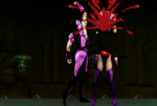 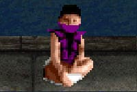 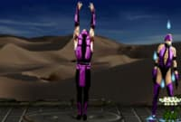
Fatality - Upside-Down Uppercut: F, F, F, D, P
Babality: B, F, F, P
Friendship - Flowers: B, F, F, (P+BL)
Brutality: F, F, DF, P
Bio:
Always a reliable servant to Shao Kahn, Reptile is chosen to assist Jade in the capture of Kitana. In contrast to Jade's instructions, Reptile is ordered to stop the renegade Princess at all costs... even if it means her death.
Special Moves:
Forceball: F, F, (P+BL)
Reverse Elbow: B, F, F, LK
Finishers: 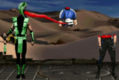 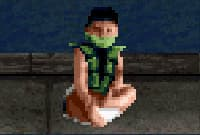 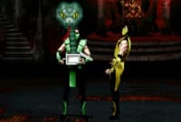
Fatality - Yummy!: F, F, F, D, P
Babality: B, F, F, P
Friendship - Snake in the Box: B, F, F, (P+BL)
Brutality: F, F, DF, P
Bio:
Sektor is actually the code name for unit LK-9T9. He was the first of three prototype cybernetic ninjas built by the Lin Kuei. Sektor was once a human assassin trained by the Lin Kuei. He volunteered for automation because of his loyalty for the clan.
Sektor survives the Outworld invasion - he has no soul to take.
Special Moves:
Missile: F, D, B, P
Teleport Uppercut: F, F, LK (Also in Air)
Finishers: 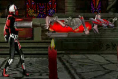 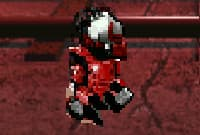 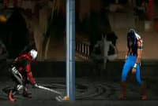
Fatality - Compactor: F, F, F, D, P
Babality: B, F, F, P
Friendship - Hammer Time: B, F, F, (P+BL)
Brutality: F, F, DF, P
Bio:
In the realm of the Outworld, Motaro's race of Centaurians has long since come into conflict with the Shokan. When Shao Kahn formed special extermination squads to eliminate the Chosen Warriors of Earth, Motaro was appointed to head this elite group of
savage warriors.
Special Moves:
Grab and Punch: F, F, (P+LK)
Tail Whip: B, B, D, LK
Finishers:
N/A
Bio:
Many decades ago, Shao Kahn rose to power in the Outworld, usurping the realm from Kitana's parents and taking Queen Sindel for his bride. Then she died. Now, centuries later, Sindel is reborn. And since Shang Tsung failed to win the Earthrealm through
Mortal Kombat I and II, her rebirth is the means by which Kahn will finally seize the planet forever unless...
Special Moves:
Shoulder Charge: D, F, P
Hammer Smash: D, F, (P+BL)
Finishers:
N/A